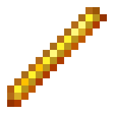

Apotheosis
With this plugin, you can modify spawners! You can get spawners using silk touch.
You can look at a spawner to see it's stats. There's no limit on spawner modifications.
Speed Modifier
Mob Modifier

Range Modifier

Count Modifier

Inverse Modifier